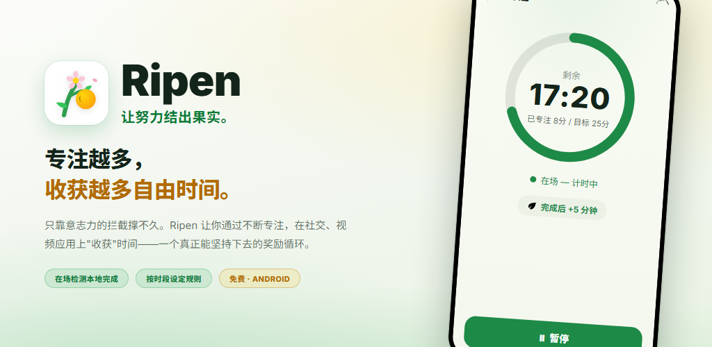
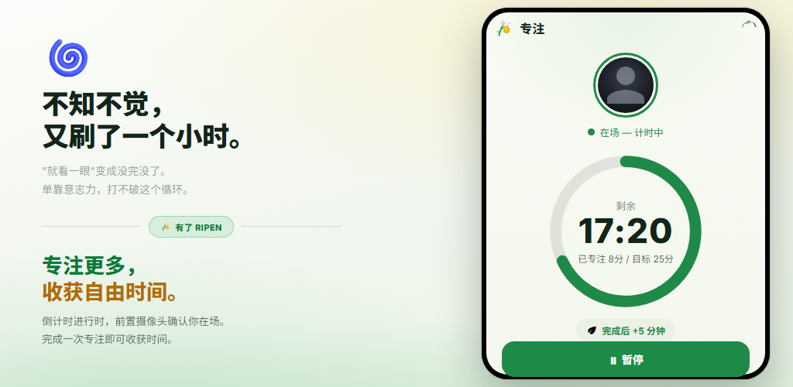
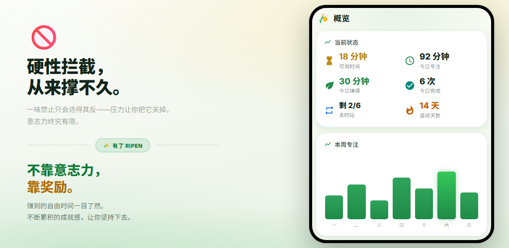
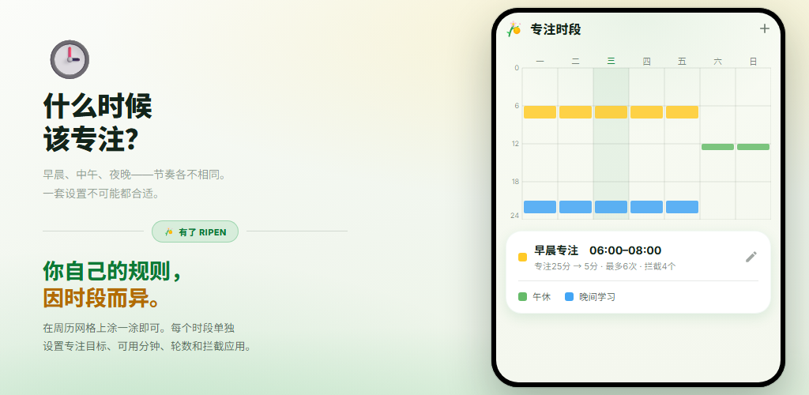
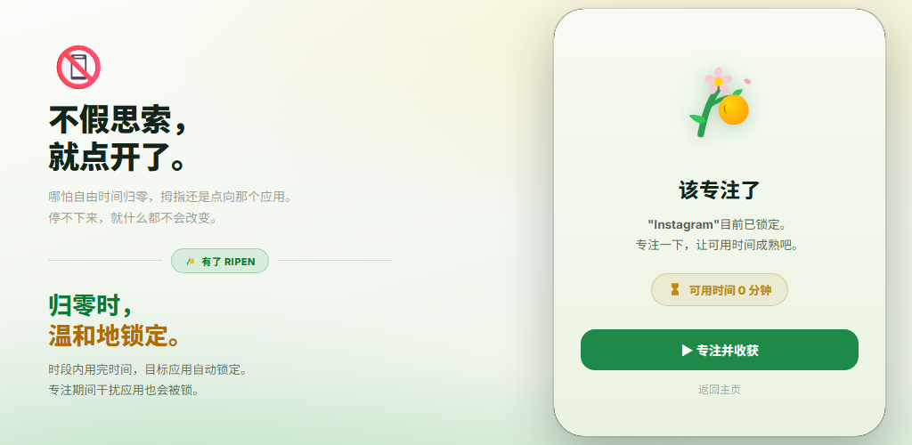
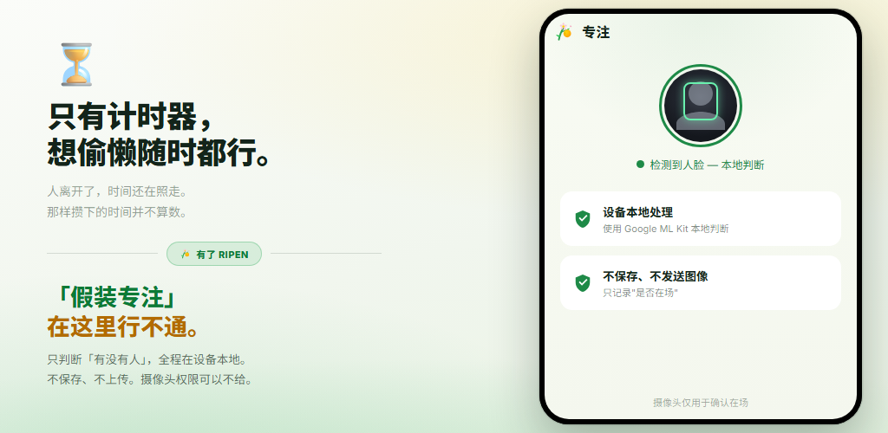

奖励循环
每完成一次专注计时，就获得可用于社交和视频应用的时间。改变行为的是奖励，而不是忍耐。
靠忍耐硬扛的应用拦截坚持不了多久。Ripen 是一款奖励式习惯养成应用：专注和学习积累得越多，能“收获”的社交、视频应用使用时间就越多。摄像头在场检测在设备上完成，并可按时段关闭。
Android 8.0 及以上 · 免费 · 无广告 · 无需注册账号

无需复杂设置。你只需决定“何时专注、专注多久、能换来多少时间”。
在每周网格上涂选，设定想要专注的星期和时间段
开启在场确认时，前置摄像头一边确认你在场，一边倒计时
每完成一次，就获得设定好的可用时间（也可以用单词测验）
可用时间归零时，你选择的应用会被温和地拦截
在开启在场确认的时段，专注计时器只在你的脸位于屏幕前时才会推进。完成目标后，即可获得设定好的社交或视频应用使用时间。中途放弃的那一次不计奖励。

“可用时间”“今日专注”“今日赚得”“连续天数”一目了然。周、月趋势图和按小时的热力图，还能让你看出自己最容易专注的时段。

只需在每周网格上涂选，即可设定想要专注的星期和时间段。每个时段都可分别设置专注目标、每次可用时间、次数上限、拦截应用和摄像头在场确认。时段之外，完全自由。

某个时段的可用时间用完后，打开你选择的应用会显示拦截界面。专注期间，容易分心的应用也会被锁定。“设置锁定”还能防止你事后放宽规则。

单纯的计时器，即使你离开座位也会继续计时。Ripen 用前置摄像头在设备上只判断“屏幕前是否有人脸”，不保存也不发送任何图像。你也可以选择不使用摄像头的时段。

通过视频看看如何专注、收获时间，以及时间用完后应用如何被锁定。
用奖励改变“想戒却戒不掉”。
每完成一次专注计时，就获得可用于社交和视频应用的时间。改变行为的是奖励，而不是忍耐。
前置摄像头只判断你是否在屏幕前。在设备上处理，不保存也不发送图像。可按时段关闭。
按星期和时间设定多个时段。每个时段都可分别设置专注目标、可用分钟数、次数上限和拦截应用。
答对设定数量的英语单词四选一测验，也能获得一次奖励。收录约 10,000 个按 CEFR 等级分类的单词，支持水平测试、复习列表和自建单词库。
时段一开始就能先使用的额度。即使还没专注也能用一点，并叠加在专注奖励之上。
防止你通过修改设置给自己多加休闲时间的承诺功能。放宽类的更改须先预约解锁，再等待 1–30 天。
专注趋势、专注日历、完成率、最能专注的时段，以及被拦截应用的使用趋势，全部可视化呈现。
无需打开应用，常驻通知即可显示可用时间、下一个专注时段和本次专注的剩余时间。完成时会响铃并振动提示。
主题可选跟随系统、浅色或深色。应用支持包括英语和日语在内的 12 种语言。
听到“用摄像头判断专注”，难免让人担心。Ripen 从设计之初就把隐私放在首位。
人脸在场检测借助 Google ML Kit 在设备上完成。画面绝不会发送到外部服务器。
只判断“是否有人脸”。照片和视频既不保存也不发送。只记录你在场专注的秒数。
专注记录和设置保存在你的设备上，不会发送到 Ripen 的服务器。如果开启了 Android 备份，设置会包含在 Google 账号的备份中，重新安装时自动恢复。
无需注册或登录，也不含任何广告或分析工具。下载后即可马上开始。
可在 Google Play 下载